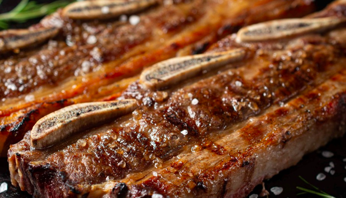

Asado

La tira de asado a la parrilla es protagonista en cualquier asado argentino. Junto con el vacío y los chorizos son los
productos más utilizados por los asadores.
Su cocción rápida permite servirlo como primer plato justo después de las
achuras.
Ingredients:
- 1 y 1/2 kilo de asado de tira
- Sal y pimienta, a gusto
Steps:
- Encender el fuego para lograr una buena cantidad de brasas, puede ser tanto con carbón como leña
- Colocar una buena capa de brasas debajo de la parrilla y calentar los
fierros hasta que adquieran temperatura
- Salar la carne, al tratarse de un corte de pequeño se puede usar sal fina, sin embargo,
siempre lo aconsejable es utilizar sal parrillera, la pimienta es a gusto de cada asador
- El tiempo de cocción dependerá del tamaño de la tira, tanto por
el corte que haya realizado el carnicero como por el tamaño del hueso
- Aproximadamente, se calcula media hora del lado de los huesos
- Cuando brota sangre, es momento de dar vuelta la tira
- Una vez esté del lado de la carne solo dorar la misma para que quede
crujiente y con color, bastará con unos diez minutos
- Retirar y dejar reposar unos minutos
- Servir y acompañar con lo que desee
Volver